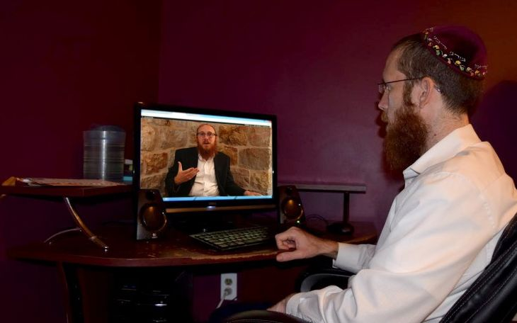

Two Brothers, Two Views
They are young and dynamic, pioneers, with original and unique programming, brothers in shlichus, passionate redheads and quick thinkers. Their main work is with students and young people, along with intensive involvement in media aimed at the Chabad community. * Meet the Crombie brothers, R’ Shraga, shliach in New Jersey and director of Chabadinfo.com, and R’ Sholom Ber (Berele), director of the Shmaya center, a Chabad House for students and young people in Yerushalayim. They do the same type of work but their views are different. * In this interview there is plenty of mutual generosity of spirit along with many intense divergences of opinion. It almost seems as if they can’t agree on anything for they argue passionately, but they also respect each other’s views.

“I am a full time shliach,” he declared at the beginning of the interview. “My involvement with the media began when I was a bachur on K’vutza, when Chabadinfo was started, but till today, I try to see to it that it does not take away in the slightest from my work with the students.”
R’ Shraga has played a key role in a number of trailblazing initiatives in the media: ChabadPedia – a Chabad encyclopedia on the internet, ChabadWorld – a site for Judaism, Moshiach and Geula in English, and many more productions from the “Merkaz Chabad HaOlami L’Kabbalas P’nei Moshiach.”
His brother, Berele, broke new ground with youthful and enticing outreach to students in Yerushalayim. Very quickly, he found himself surrounded by hundreds of students who enjoy his original programming. Many of those who collaborate with him are big organizations in Yerushalayim that aren’t necessarily Chabad, yet they find common ground with him. Along with his lectures at Ohr Chaya and around the country, he is involved in writing opinion columns on leading websites that reach general audiences, along with interviews and participating in panel discussions on major television stations.
How did it all begin, when did you go on shlichus?
R’ Shraga: I went on shlichus over ten years ago. About a year after I married, I joined R’ Yosef Carlebach’s Chabad House in New Jersey. My main work is with students studying here, not necessarily with Israelis. But when there are Israelis, it’s only natural that we have more of a connection. There are many shluchim here because there is so much to do. There is R’ Carlebach who is here for nearly forty years, and who established an empire of shlichus, and R’ Boruch Goodman who is here for thirty years and who works devotedly with students. A few years ago, R’ Yeshaya Shagalov joined, who works mainly with religious students. I also work in the Chabad House office, handling publications, their internet site and more, along with holiday programs for students and activities around the year.
Berele: I have been at the Chabad House in Nachlaot in Yerushalayim for eight years. I came on shlichus together with my wife Liba, right after our wedding. Before that, I spent two years at a Chabad House in India. When I returned to Eretz Yisroel I wanted to open a Chabad House with the spirit of India, something unique that wasn’t widespread at the time – shlichus with students. That is how I got to the artsy neighborhood of Nachlaot.
What are the differences in the openness to Judaism among Israeli students versus students elsewhere?
Shraga: In general, everyone thinks the other guy has it easy, and everyone picks the place where he thinks it will be easier for him to have an impact. I give credit to my brother for his work with students in Eretz Yisroel. Today, boruch Hashem, it’s a widespread phenomenon, but when he went on shlichus, it was not common in Eretz Yisroel. The concept of opening a Chabad House especially for students practically did not exist. Outside of Eretz Yisroel it started many years ago and the first shluchim that the Rebbe sent out decades ago, like Rabbi Shlomo Cunin and Rabbi Yosef Carlebach and others, began their shlichus on campus.
Of course, you can look at the advantages of living in Eretz Yisroel or abroad. Personally, I wanted to live abroad for a number of reasons. First, because of the “spiritual animal soul” (if it is possible to define it as such). I live near 770, so last Motzaei Rosh HaShana we were able to make Havdala at the Chabad House and arrive for Maariv of Motzaei Rosh HaShana in 770. We do this every Motzaei Yom Tov, as we are on shlichus in a place that is within reach of 770. This is definitely a benefit in being here.
I think that there are many advantages to living outside of Eretz Yisroel along with the dangers of assimilation, etc. There is a great openness to Judaism. When people live outside of Eretz Yisroel, Chabad is something far more important to them than it is in Eretz Yisroel. The question that every shliach in Eretz Yisroel is familiar with is, “Chabad is here too?”
Berele: I have thought a lot about this and the truth is that outside of Eretz Yisroel, Israelis, and Jews in general, are more open, but then again, often the shliach tends to be more open and less rigid. I must say that the inspiration for my Chabad House is Shraga’s Chabad House. I was there on Sukkos before my wedding and I saw how they made a barbecue and there were Lubavitchers who played music and it was a big evening with lots of students. What really grabbed me was the openness on the part of the Chabad House. I saw that whoever came really felt connected on some level and could relate.
When I returned to Eretz Yisroel I opened my place. I purposely did not call it a Chabad House, because that represents a certain “stance” with certain Israelis in Eretz Yisroel. I preferred doing something with a name that is more inviting. Many of the activities done by Chabad Houses outside Eretz Yisroel are more open and I wanted to do something like that.
If the outreach approach is in fact more “open,” should it be called a Chabad House or should it be called something else?
Shraga: I may have some contentions over the fact that Berele does not want to call it a Beit Chabad. Today, this is a fairly common phenomenon. Here they call it “Friendship Circle,” and things like that, and sometimes it seems the idea is to hide the fact that we are Chabad. Soup kitchens and other things like that are opened – I’m not saying what’s right and what isn’t right – but to us, the fact that we call it a Chabad House has great significance. It says explicitly on the big building: Beis Chabad Lubavitch. Sometimes you need to employ an indirect approach in order to reach other demographics. I understand that, but I personally feel good about working in a place that is openly Chabad. When I get up in the morning and ask myself where I am working, I know it’s a Chabad House. My son knows that we go to the Chabad House for Shabbos or that his father works at a Chabad House; and this is important to me.
Berele: I don’t think it’s essential. The mekuravim, among themselves, refer to it as a Beit Chabad. Just a few minutes ago, a mekureves asked me when the Chabad House is open today. That means they know and understand that this is a Chabad House with Chabad activities. But it has many other implications regarding the character of certain activities that you don’t want to do under the name of Chabad even though they are Lubavitcher activities of spreading Chassidus and bringing people close to the Rebbe. I think that first and foremost it’s a matter of branding, but there is an advantage to the fact that the place is not called a Chabad House that enables a broader range of activities.
You named your center Shmaya in order to align with the type of programming?
Berele: Definitely. At a Chabad House I wouldn’t hold informal and open events for students. Our spiritual leadership told us, regarding a number of things, that they are borderline and should not be done under the name “Chabad House.” Whoever walks in to our place sees a big picture of the Rebbe. We don’t hide the Rebbe, G-d forbid. On every schedule of events that I print, there is a picture of the Rebbe prominently displayed. We don’t hide the fact that we are shluchim of the Rebbe. It’s the essence of our lives and we are moser nefesh for it.
Do you see a difference between the outreach done with students in Eretz Yisroel and abroad?
Berele: Yes. I have a national-religious friend here, an American, who traveled abroad and wanted to spend Shabbos at a Chabad House. He looked for places to be on Friday night and went to a meal at a Chabad House. In Eretz Yisroel he was used to a much more conservative style and over there he was taken aback by the more open style. When he asked the shliach whether this was indeed a Chabad House, the shliach said this is the style here and it is, in fact, different than other places.
Shraga: There are answers and guidance from rabbanim about what is permitted and what is prohibited, and we act accordingly. I say the opposite, call it a Chabad House and stand behind it. That’s not an excuse, to not call it a Chabad House and then do what you want. On the contrary, I think it should be called a Chabad House and it should maintain the appropriate standards worthy of the name.
Berele: I still think that there is a place for Chabad activities that are not under the official name of Chabad.
Shraga: Then maybe you shouldn’t do it altogether … What is not suitable to be done under the name of Chabad, is not suitable altogether, and it is not proper that Chabad is doing something like that and for a shliach to be doing it.
If you say Shmaya is a Chabad House, but we called it that because more people will come to a Chabad House called Shmaya, I accept that. But if you say that you call it Shmaya because that enables you to do things that are not proper for a Chabad House to do, that is a problem! You are doing things that shouldn’t be done?!
Berele: I think our standards are still very high, definitely as compared to the openness abroad. Everything we do is done in consultation with mashpiim and with the “spiritual administration,” and we don’t make a move without them. Concurrently, I think that that was the very idea of calling it by another name to allow for doing the type of programming necessary for this crowd.
Shraga: I don’t agree. If there are things that cannot be done under the name of Chabad, they shouldn’t be done. I agree with you that the standards in Eretz Yisroel are higher. There is a joke that says, what’s the problem with eating food with the rabbanut hechsher on planes going to Eretz Yisroel? Because it’s warmed up with food with the mehadrin hechsher from abroad …
I think there is a lack of awareness on the part of shluchim. In Eretz Yisroel there are many things that are done with greater consideration for being particular about instructions of the Rebbe. Many people in America have no idea that there is a problem with the Israeli flag, for example. You can see these flags at events and dinners. Here, at our Chabad House, R’ Carlebach is well aware and he does not allow these kinds of compromises to enter the Chabad House.
Berele: Apropos to what you said, I met someone in Yerushalayim the other week who did a lecture tour in communities and at campus Chabad Houses in the US. They let him speak about Zionism, aliya etc., except for one place where they didn’t allow it, R’ Carlebach’s Chabad House. He was shocked to learn that the Rebbe says one does not need to make aliya in order to be a good Jew.
Shraga: Abroad there is more openness on the part of the students and, unfortunately, also more openness on the part of the shliach, which isn’t always proper. There is no such thing. Care must be taken regarding every detail, large and small.
Both of you are involved with media in addition to your student outreach work. How does that work?
Shraga: Some shluchim don’t understand that an inseparable part of their outreach includes sending articles to newspapers and websites; it makes no difference whether within Chabad or out of Chabad. A shliach often feels, “I don’t need to be one of those who runs after glory and sends in his pictures all the time.”
This is not correct for several reasons. First, in the shliach’s city, the publicity begins not before the event, but after. If a shliach thinks he’s going to start advertising before the Lag B’Omer event, he is mistaken, because the truth is that he starts advertising on Motzaei Lag B’Omer about the next Lag B’Omer. When he sends an article and pictures to a newspaper after every event, he is starting the advertising for the next year’s event.
We see even within Chabad how much the Rebbe invested himself in encouraging the publications of albums and reports about the Lag B’Omer parades and Chanuka lightings. We see that the Rebbe considered it very important to display these things and the Rebbe was very involved in the details.
Shluchim often say that people within or outside of Chabad saw an article and decided to make a donation to them, as a result. Especially in the age of the internet, when I write an article about Purim, for example, at the Chabad House, you never know whether a few years down the line someone might do a search of the words “Purim Chabad,” and find our article. There are plenty of stories like this.
Today you cannot say that a certain website is meant for Chabad and another one is not, because the information is accessible to everyone. You never know who will be exposed to it and when. It is meant for the world at large and it is important that we publicize these things.
Berele: Here’s a story. I wanted to publicize an event I did for Chai Elul and I did so in a paper belonging to the dati sector. The next day I got a phone call from a senior person in the Yerushalayim municipality who wanted to meet with me because of that item.
My involvement has changed over time. I started writing for Beis Moshiach and Chabadinfo, and now my writing is mainly for non-Chabad sources and even the general media that would not be classified as religious.
You also write on non-Chabad forums about all sorts of topics that don’t necessarily have anything to do with Chabad.
Berele: The Rebbe wrote to a number of people who thought that their writing was not influential, that they need to be published wherever possible. Uri Tzvi Greenberg and others got answers from the Rebbe about this.
How does writing on subjects that have no direct connection to Judaism or Chabad, pertain to a shliach?
Berele: When there are any controversies about religious matters in Eretz Yisroel, you need to write about it and offer a response and position. However, you also cannot just be a “commentator” who writes only opposing views and only what “believing Jews” have to say about every issue. If you want to establish a place for yourself on the editorial pages or in the media in general, you must work at it, in the context of an actual job, and write about other things too, so that you will be a columnist whose content is read and not only as someone who is reacting.
Shraga: I’m thinking of someone like Berke Wolf a”h who never wrote about secular matters and wrote exclusively about the Rebbe. Wherever he went and worked, he expressed only the Rebbe’s viewpoint. In my work with the media I also work with journalists and I don’t get involved with the “dramas” that take place in the world in general, nor in the frum world. My only consideration is: what is our role.
Berele: Berke is one example, but there is also the counter example of Gershon Ber Jacobson. He was a journalist and that was his shlichus. He would get up in the morning to be a journalist and get scoops and he did many things for the Rebbe.
Shraga: That could be, but this approach still does not seem right to me. For example, once upon a time when a Lubavitcher journalist expressed a view on politics or the economy, people didn’t say, “That is the column of the Lubavitcher,” but in today’s day and age when every opinion column or article has a picture of the author, and everyone sees who’s who, you ask yourself, what connection is there here to a Lubavitcher? True, it is not always easy, but I don’t think my job is to be involved in the media to express views on other issues.
Can there be a “Lubavitcher journalist?”
Shraga: If I would see Berele setting out to become a journalist like others, getting involved in everything and using this position to put things in the press that are usually frowned upon; or if I would see an article about the Rebbe, Moshiach, 770, etc. once every ten or even a hundred articles, I would say it is worth it. But if I go to their world and I’m just like everyone else, what was accomplished?
Berele: First, there is a difference between a journalist and someone who writes an opinion column. I am not involved at all today in writing news articles; I just write an opinion column. Second, the question is, what does it mean to properly utilize your position? I can tell you that I have connections with all kinds of people on whom I have an influence through my writing and I have a lot of things going on with them behind the scenes. People tell me outright, it’s because of you that we look at the frum world, at Chabad, at Meshichistim, differently. My answer is, there are many things going on behind the scenes and not only what you see up front.
Shraga: To love Meshichistim is one thing, but if you were to decide to take this on as a full-fledged mission, and I think you have the abilities to do that, and you would say to me, listen, I have the talent to be a journalist and instead of their taking someone else, I will be a reporter, that’s something else. If this is a shlichus, I don’t disagree with that.
Today, we all know there is a lot of work that can be done in getting articles pulled, in withholding negative publicity. So maybe it is not necessary to work in journalism but in creating connections with journalists?
Shraga: I look at it this way – either he’s wearing the hat of a Lubavitcher, like Berke, or he is someone who hides his Lubavitcher hat and says, I am hiding on the inside and fomenting a revolution from within.
Both are fine, but I relate more to the authentic Lubavitcher approach. The fact is that the first generation of Chabad spokesmen spoke as Lubavitchers and not as undercover Lubavitchers. I hear what he’s saying, and I’m not saying it’s incorrect, but I don’t relate to it.
Berele: I think that the reality and communication have changed so much since Berke Wolf’s time. Rabbi Moshe Levinger used to be the spokesman for Gush Emunim. He would send press releases saying here an encampment was started and there a tree was planted. Then a group of young fellows came along that operate like a well-oiled “scoop machine,” who strengthened ties with journalists and that is how they are getting their message out to the masses. There’s nothing you can do; today it is impossible to further one’s agenda any other way.
What are your thoughts about publicizing kabbalas p’nei Moshiach?
Berele: In our Chabad center, we have the Rebbe’s picture and the bold writing underneath: The only remaining avoda is kabbalas p’nei Moshiach Tzidkeinu b’poel mamash. People know what the message is. People come to our place, which looks really nice and which has shiurim and exciting things going on, so they relate to all of it. A journalist once came to me and when we were first getting acquainted he asked: Are you a Meshichist? He tried starting up with me about this.
I told him: You won’t convince me and I won’t convince you, so let’s speak about it another time.
He said: You are the first Meshichist who isn’t trying to debate me on this.
I said: You know what I think, because it says so on my kippa. Now, what I need to do is prove to you that I’m normal.
He said: Wow, I get it… that is indirect messaging.
I asked him to attend an event of a Meshichist shliach. Afterward, he told me: The truth is that I was at that event and I saw how respectable it was and today I view the message of the Meshichistim differently.
We are very good at making sure that our message is always front and center. Now we need to prove that behind this message are people who are serious and who know what they’re talking about and have a basis for what they say. Then people will want to listen. When a person wants to hear the message, he is no longer doing you a favor for listening but actually comes with a desire to understand. The first thing he encounters is you, and he listens to you, and if you succeed in touching him, he will also listen to the message.
Shraga: I’m going to surprise you a little on this. I relate to what Berele said. I made an upsheren for my son and on the invitation it said Yechi. My wife said, “What’s this? What will an American who gets this invitation make of it?”
I changed the wording to, “We want Moshiach now,” and of course, at the event, there was Yechi, but it wasn’t Yechi just as a pronouncement, because Yechi as a pronouncement is important to those who know its significance. We proclaimed Yechi in front of the Rebbe and we know how important it is, but you have to think what a mekurav will get from it. We need to convey a message to him and sometimes, “We want Moshiach now” is more extreme than writing Yechi because he doesn’t know what Yechi is.
Here, at the davening, at the end of every t’filla, R’ Goodman starts singing, “Dovid Melech Yisroel Chai V’kayam,” and continues with Yechi, and from the perspective of the religious students it’s not extreme, because you are saying that Dovid HaMelech and the Rebbe are chai v’kayam. But on the street, when you tell people that Moshiach is coming now, they ask, why should he come now? Who is he? Who is speaking about him at all?
It’s not that we don’t say Yechi; on the contrary. At the entrance to the Chabad House is a room which corresponds to the Rebbe’s room, on which it says, “The Rebbe’s room – Beis Moshiach,” and there is Yechi, and everything, but it comes after explanations.
Berele: Fine. This time, we agree.
Beis Moshiach (staff). "Two Brothers, Two Views." Beis Moshiach, no. 1063 (March 28, 2017).